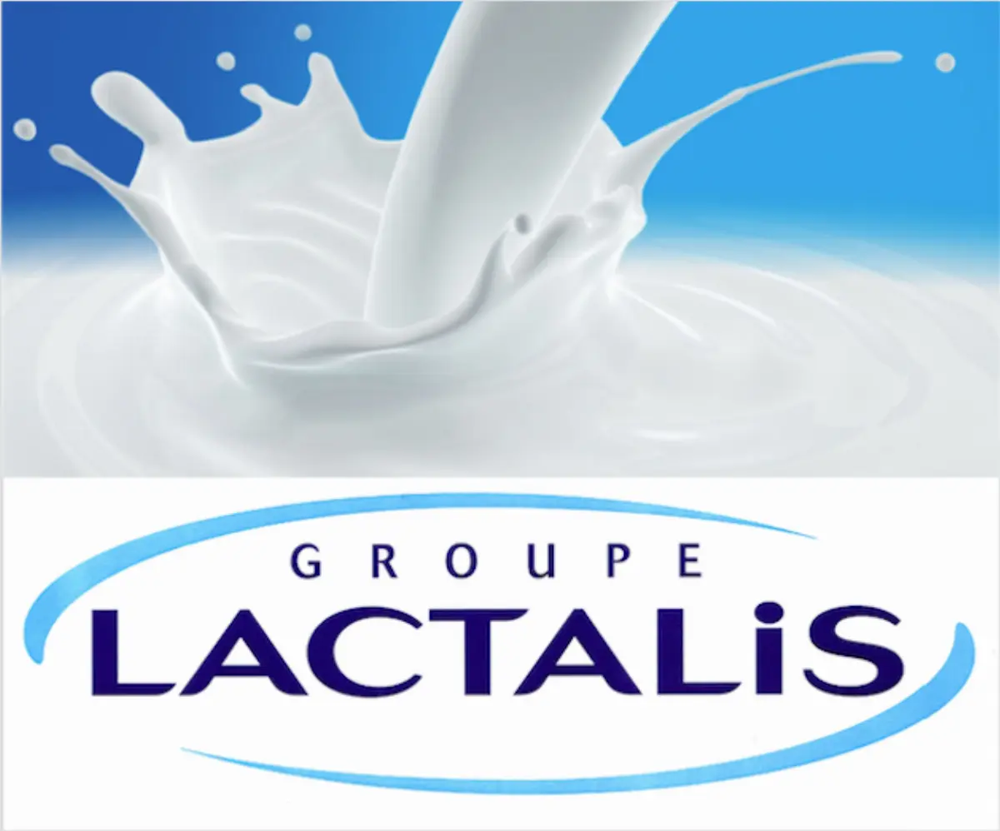
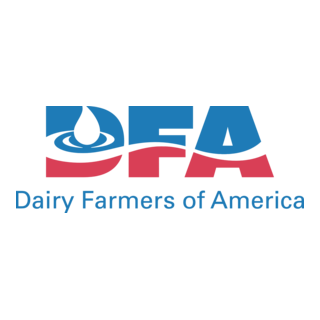
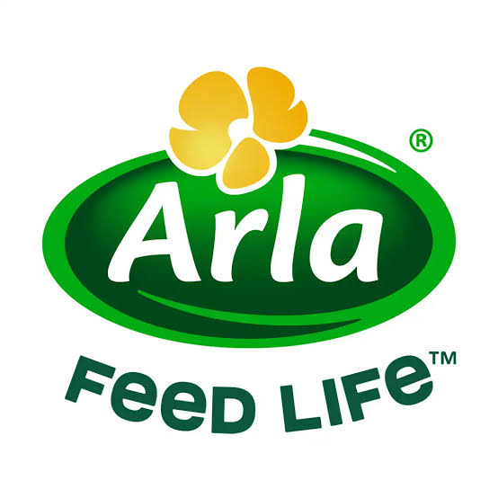
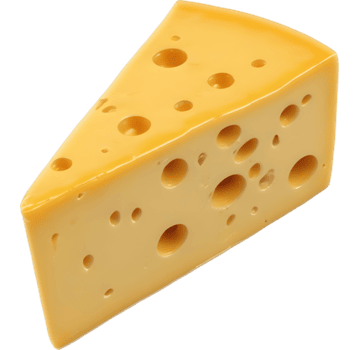
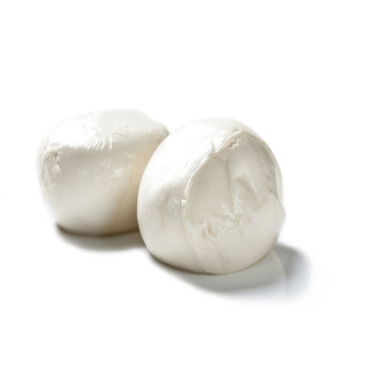
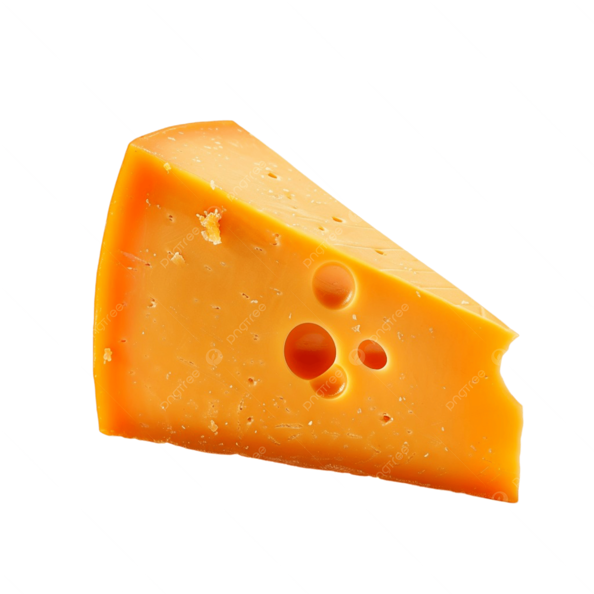
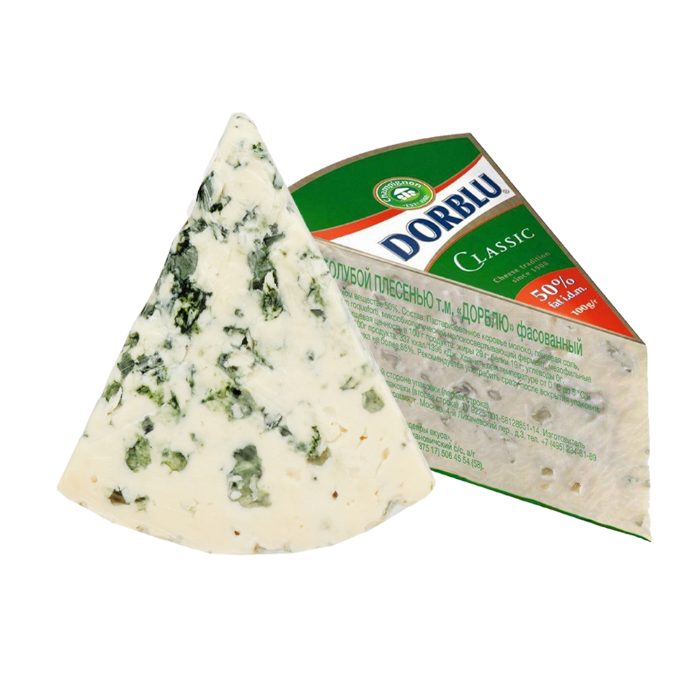

Cheesy Peasy - All about cheese

Groupe Lactalis
Groupe Lactalis S.A. (doing business as Lactalis) is a French multinational dairy products corporation, owned by the Besnier family and based in Laval, Mayenne, France.The company's former name was Besnier S.A. until 1999. Lactalis is the largest dairy products group in the world, and first milk seller in France.It owns brands such as Parmalat, Président, Kraft Natural Cheese, Siggi's Dairy, Skånemejerier, Rachel's Organic, and Stonyfield Farm.It also markets Yoplait products in the United States. As of 2020, Lactalis employs approximately 85,000 people in 51 countries and 266 plants around the world. In the same year, net sales amounted to €21.1 billion.
More
DFA
Dairy Farmers of America Inc. (DFA) is a national milk marketing cooperative in the United States. DFA markets members' raw milk and sells milk and derivative products (dairy products, food components, ingredients and shelf-stable dairy products) to wholesale buyers both domestically and abroad. Net sales in 2016 were $13.5 billion, representing about 22 percent of raw milk production in the United States. DFA was formed in 1998 through the merger of four dairy cooperatives: the Southern region of Associated Milk Producers Inc.; Mid-America Dairymen Inc.; Milk Marketing Inc.; and Western Dairymen Cooperative Inc.
More
Arla Foods
Arla Foods is a Danish/Swedish multinational co-operative based in Viby, Denmark. It is the fifth biggest dairy company in the world and the largest producer of dairy products in Scandinavia and the United Kingdom. Arla Foods was formed as the result of a merger between the Swedish dairy co-operative Arla and the Danish dairy company MD Foods on 17 April 2000. The name Arla derives from the same word as the English word 'early' and is an archaic Swedish term for 'early (in the morning)'.
More
CHEESE
Cheese is a type of dairy product produced in a range of flavors, textures, and forms by curdling of milk, usually from cows, goats or sheep, and sometimes of water buffalo.
More
MOZZARELLA
Mozzarella is a type of cheese of Italian origin . The cheese is white in color and is made in the form of balls the size of a large apple. It is often used in the preparation of various salads and pizzas . The word Mozzare means "to cut" in Italian.
More
CHEDDAR
Cheddar cheese (or simply cheddar) is a natural cheese that is relatively hard, off-white (or orange if colourings such as annatto are added), and sometimes sharp-tasting. It originates from the village of Cheddar in Somerset, South West England.
More
DORBLU
Blue cheese is any cheese made with the addition of cultures of edible molds, which create blue-green spots or veins through the cheese. Blue cheeses vary in flavor from mild to strong and from slightly sweet to salty or sharp; in color from pale to dark.
More